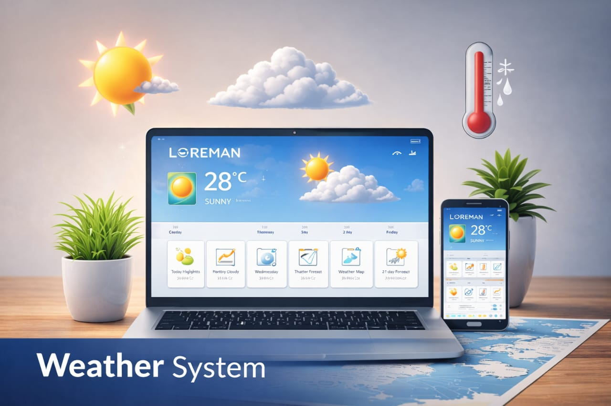

WanderLite Smart Tourism Dashboard
A real-time tourism dashboard that combines weather, currency exchange, and nearby attractions in one experience. WanderLite helps users quickly explore any city by viewing live weather conditions, current exchange rates, and nearby attractions on an interactive map.

Problem statement
Travelers usually switch between multiple apps/tabs for weather, currency conversion, and places to visit. This creates friction and slows trip planning. WanderLite solves this by aggregating essential travel intelligence into one unified dashboard with real-time updates and map-based visualization.
Key features
- City-based weather insights (temperature, humidity, wind, pressure, sunrise/sunset).
- Live currency conversion between major currencies.
- Nearby attraction discovery by category (sights, museums, parks, entertainment, restaurants).
- Interactive map with attraction markers and quick navigation actions.
- Bright, modern, responsive UI with icon-rich navigation.
- No authentication required (open public access).
System architecture
Architecture pattern
Lightweight Layered Web Architecture.
Layers
- Presentation layer: static pages (HTML/CSS/JS) + client-side rendering.
- Application layer: Express route handlers and response shaping.
- Integration layer: external API connectors (weather, exchange, places).
Flow
Client Request → Express Route → External API(s) → Normalized JSON Response → UI Rendering.
Design decisions
- Moved API keys and third-party calls to backend routes for security.
- Added standardized API responses for frontend consistency.
- Implemented fallback provider logic for attraction reliability.
- Centralized styling into a shared design system (
app.css) for maintainability.
Data and request shaping
- One city query → one weather payload + one coordinate pair.
- One coordinate pair → many attractions.
- One conversion request → one exchange result.
Database
None (API-driven dashboard).
Validation & constraints
- Required query params (
city,from,to,amount,lat,lon). - Numeric validation for coordinates and amount.
- Graceful error payloads for upstream API failures.
- Provider fallback when Geoapify key is missing or invalid.
Deployment & hosting
- Deployed on Render.
- Runs locally via Node runtime (
npm start). - Render-compatible Express setup.
Demo access
Visitors can use the live public dashboard directly; no authentication is required.
Engineering decisions
- Backend routes were used to protect API keys and hide provider implementation details.
- A normalized response contract simplified frontend rendering logic.
- Fallback provider logic reduced failure rates for attraction search.
- A centralized styling system improved consistency and maintainability.